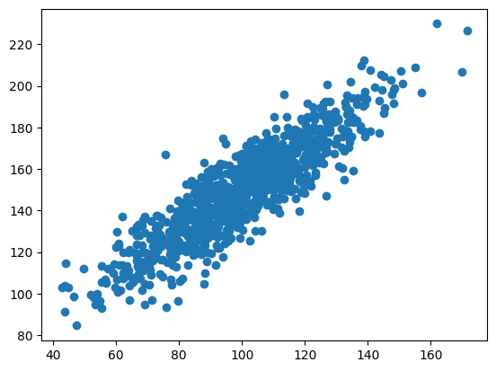
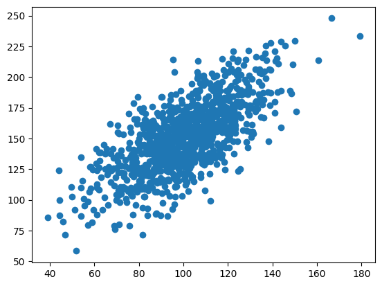
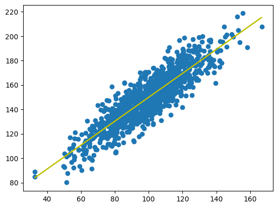

I practised calculating correlations and making regression models with Python.
I started by generating random datasets and calculating the Pearson correlation coefficient.
from numpy.random import randn
from matplotlib import pyplot as plt
from scipy.stats import pearsonr
data1 = 20 * randn(1000) + 100
data2 = data1 + (10 * randn(1000) + 50)
plt.scatter(data1, data2)
plt.show()
corr = pearsonr(data1, data2)
print("Pearsons correlation: %.3f" % corr.statistic)

Pearsons correlation: 0.893
I added more variance to data2 - the correlation went down.
data2 = data1 + (20 * randn(1000) + 50)
plt.scatter(data1, data2)
plt.show()
corr = pearsonr(data1, data2)
print("Pearsons correlation: %.3f" % corr.statistic)

Pearsons correlation: 0.698
I added even more variance to data2 - the correlation went further down.
data2 = data1 + (50 * randn(1000) + 50)
plt.scatter(data1, data2)
plt.show()
corr = pearsonr(data1, data2)
print("Pearsons correlation: %.3f" % corr.statistic)
Pearsons correlation: 0.333
Next I fitted a linear regression model to the random data.
from scipy import stats data2 = data1 + (10 * randn(1000) + 50) model = stats.linregress(data1, data2) def model_function(x): return model.slope * x + model.intercept mymodel = list(map(o, data1)) plt.scatter(data1, data2) plt.plot(data1, mymodel, "y") plt.show()
